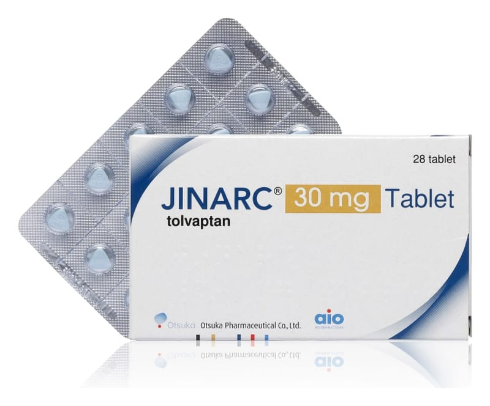

Jinarc 30 mg Tablet, 56 Adet

Ne için kullanılır
KT · Bölüm 1JİNARC, “otozomal dominant polikistik böbrek hastalığı” (ADPKD) isimli hastalığın tedavisi için kullanılan bir ilaçtır. Bu hastalık, böbreklerde sıvı dolu kistlerin büyümesine yol açar ve bu da, çevre dokularda baskı yaratarak ve böbrek fonksiyonunu azaltarak, muhtemelen böbrek yetmezliğine neden olur. JİNARC, 1. ila 4. evrede kronik böbrek hastalığı (KBY) olan ve hastalığının hızlı ilerlediği ispatlanan yetişkinlerde, ADPKD’nin tedavisi için kullanılır.
JİNARC, etkin madde olarak tolvaptan içerir. Tolvaptan, ADPKD hastalarının böbreklerinde kist oluşumuna yol açan bir hormon olan vazopresinin etkisini bloke eder. JİNARC, vazopressinin etkisini bloke ederek ADPKD hastalarında böbrek kistlerinin gelişimini yavaşlatır, hastalık semptomlarını azaltır ve idrar üretimini arttırır.
JİNARC 30 mg Tablet, bir tarafında “OTSUKA” ve “30” baskılı, mavi, yuvarlak tabletlerdir. 28 ve 56 tabletlik blister ambalajlarda kullanıma sunulmaktadır. Bu ilacı kullanmaya başlamadan önce bu KULLANMA TALİMATINI dikkatlice okuyunuz, çünkü sizin için önemli bilgiler içermektedir. • Bu kullanma talimatını saklayınız. Daha sonra tekrar okumaya ihtiyaç duyabilirsiniz. • Eğer ilave sorularınız olursa, lütfen doktorunuza veya eczacınıza danışınız. • Bu ilaç kişisel olarak sizin için reçete edilmiştir, başkalarına vermeyiniz. • Bu ilacın kullanımı sırasında, doktora veya hastaneye gittiğinizde doktorunuza bu ilacı kullandığınızı söyleyiniz. • Bu talimatta yazılanlara aynen uyunuz. İlaç hakkında size önerilen dozun dışında yüksek veya düşük doz kullanmayınız.